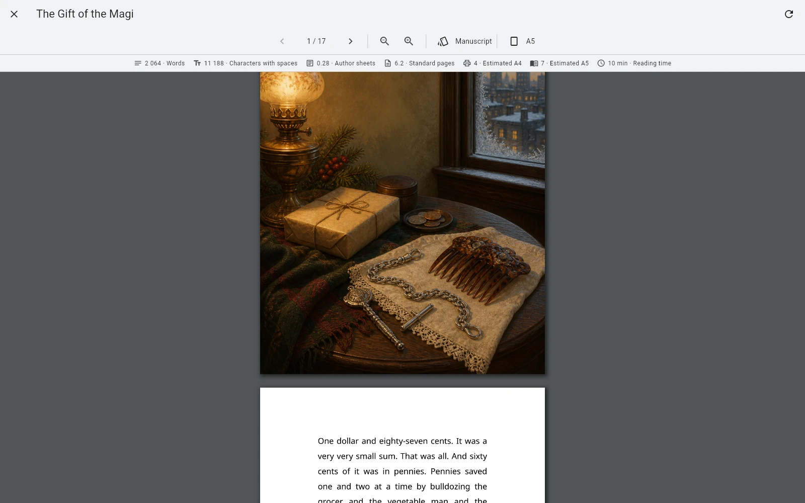

Разница
Граница главы — смысловая. Page break — физическая.
Не каждый раздел должен начинаться с новой страницы
Внутри главы могут быть вложенные элементы, которые должны идти непрерывно. Если автоматически превращать каждую ветку дерева в новую страницу, книга рассыплется.
Некоторые границы нужно задавать явно
Новая часть, приложение, специальная вставка или крупный смысловой блок могут требовать новой страницы, даже если одна только иерархия этого не выражает.
Page Break полезен рядом с Preview
Рабочий цикл визуальный: поставить разрыв там, где он нужен чтению, затем посмотреть всю книгу. Это не абстрактное форматирование, а управляемый переход в финальном результате.

Page Break не должен чинить плохую структуру
Если раздел на самом деле должен быть отдельной главой — сделайте его главой. Page Break решает задачу layout, а не организации рукописи.